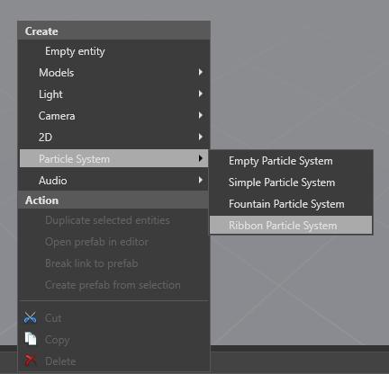

Создание частиц
Начинающий Художник Программист
Чтобы создать систему частиц, щелкните правой кнопкой мыши на сцене или дереве объектов, выберите Particle System, и выберите предустановку (Empty, Simple, Fountain, или Ribbon).

Game Studio создаст объект с компонентами Transform и Particle System с выбранной вами предустановкой. Частицы представлены значком пламени.

В качестве альтернативы вы можете добавить компонент частицы к существующему объекту. Выбрав объект, в Сетке свойств (Property Grid), нажимите Добавить компонент (Add component) и выберите Систему частиц (Particle System).

Game Studio добавит к объекту пустую систему частиц.
Трансформация компонента
Все объекты имеют компонент преобразования. Некоторые элементы частиц игнорируют некоторые элементы компонента преобразования, такие как вращение или масштабирование. Например, сила тяжести не должна зависеть от вращения системы частиц и всегда игнорирует вращение; Однако системы фонтанных частиц наследуют местоположение для определения начальной скорости частицы.
Поддерживается только равномерное масштабирование. Если у вас неравномерный масштаб на компоненте преобразования, используется только ось X.
Если вы хотите, чтобы две системы частиц использовали один и тот же компонент преобразования, создайте два объекта систем частиц и сделайте один из них дочерним по отношению к другому.
Свойства компонентов частиц
Выбрав элемент системы частиц, вы можете редактировать его свойства в Сетке свойств (Property Grid), как и любой другой объект.

| Свойство | Описание |
|---|---|
| Editor control | Изменение способа отображения частиц в Game Studio во время работы над сценой. Вы можете воспроизводить, приостанавливать и останавливать систему частиц. Вы также можете сбрасывать эффект частиц через заданные интервалы времени, что полезно для предварительного просмотра одноразовых эффектов. Имейте ввиду, что данные настройки не влияют на то, как частицы отображаются в игре, и требуются лишь для оценки визуальных свойств. |
| Warm-up time (время прогрева) | Значение в секундах времени прогрева перед появлением. Если вы установите время прогрева Warm-up time на значение большее, чем 0, частица выглядит так, как будто она уже активна в момент своего появления. Например, если вы установите время разогрева 1, эффект частицы выглядит так, как будто он уже был активен в течение 1 секунды в момент своего появления. Это полезно, например, если вы устанавливаете время разогрева эффекта огня 0, огонь, кажется, загорается сразу после разведения. Если вы хотите, чтобы при разведении огня создавалось впечатление, будто он уже разгорелся, увеличьте время разогрева. |
| Speed scale (скорость эффекта) | Управляет скоростью эффекта частиц. |
| Culling AABB (ограничивающая рамка) | Это создает ограничивающую рамку, выровненную по осям (AABB) вокруг эффекта частиц. Если ограничивающая рамка не находится в поле зрения камеры, Stride не отображает эффект частиц. Это полезно для отбраковки и оптимизации. Rotated AABB задает форму короба в координатах XYZ. Uniform AABB создает куб указанного вами масштаба (в мировых единицах). Для просмотра AABB в Редакторе Сцены (Scene Editor), выберите Debug Draw. |
| Emitters (эмитеры/источники) | Излучатели, содержащиеся в системе частиц. Эмиттеры обновляются и отображаются в том порядке, в котором они указаны в списке, и их порядок можно изменить. Для получения более подробной информации см. Излучатели (Emitters). |